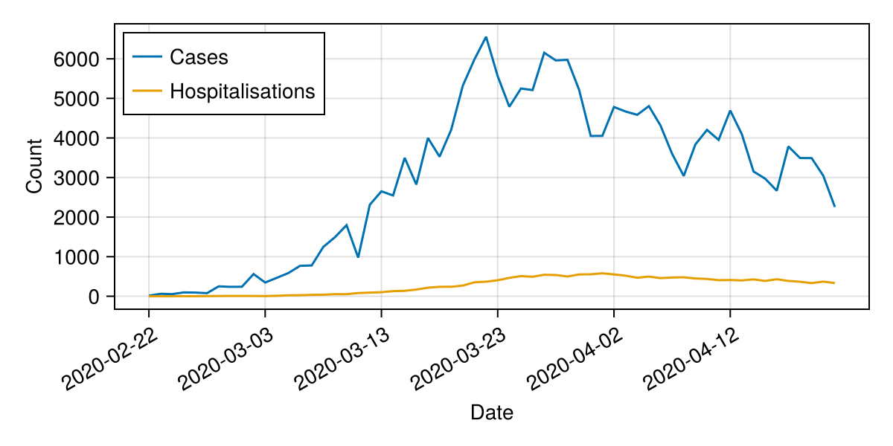
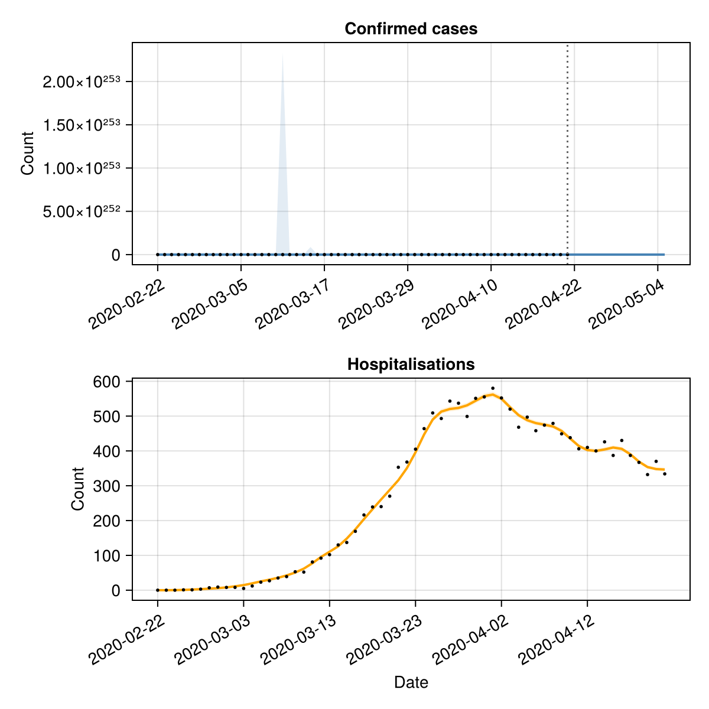

Forecasting multiple data streams
This tutorial demonstrates how to use EpiNow2.jl to forecast multiple epidemiological outcomes — for example, cases and hospitalisations — by combining estimate_infections() with estimate_secondary().
Setup
using EpiNow2
using CSV, DataFrames, Dates, Distributions, Statistics, Random
using CairoMakie
Random.seed!(6789)Data
We use the example case data and simulate a hospitalisation time series, assuming 10% of cases are hospitalised with a log-normal delay (mean ~7 days).
pkgdir = dirname(dirname(pathof(EpiNow2)))
cases_df = CSV.read(
joinpath(pkgdir, "test", "reference", "example_confirmed_full.csv"),
DataFrame
)
cases_df.date = Date.(cases_df.date)
cases_df = first(cases_df, 60)
# Simulate hospitalisations: 10% of cases with a lognormal delay
primary = DataFrame(date=cases_df.date, primary=cases_df.confirm)
hosp = simulate_secondary(
primary;
delays = delay_opts(LogNormal(1.6, 0.5)),
frac = 0.1
)
df = DataFrame(
date = cases_df.date,
cases = cases_df.confirm,
hospitalisations = hosp.secondary
)
first(df, 6)| Row | date | cases | hospitalisations |
|---|---|---|---|
| Date | Int64 | Int64 | |
| 1 | 2020-02-22 | 14 | 0 |
| 2 | 2020-02-23 | 62 | 0 |
| 3 | 2020-02-24 | 53 | 0 |
| 4 | 2020-02-25 | 97 | 1 |
| 5 | 2020-02-26 | 93 | 1 |
| 6 | 2020-02-27 | 78 | 3 |
fig = Figure(size=(600, 300))
ax = Axis(fig[1, 1]; xlabel="Date", ylabel="Count")
date_nums = Dates.value.(df.date .- df.date[1])
lines!(ax, date_nums, Float64.(df.cases); label="Cases")
lines!(ax, date_nums, Float64.(df.hospitalisations); label="Hospitalisations")
tick_step = max(1, nrow(df) ÷ 6)
ax.xticks = (date_nums[1:tick_step:end], string.(df.date[1:tick_step:end]))
ax.xticklabelrotation = π/6
axislegend(ax; position=:lt)
fig
Estimating infections
We first estimate infections and forecast cases using estimate_infections(). We use the confirmed cases and specify the generation time, incubation period, and reporting delay.
generation_time = UncertainDistribution(
(shape, rate) -> Gamma(max(1e-6, shape), max(1e-6, 1 / rate)),
[truncated(Normal(1.4, 0.48); lower=0.01),
truncated(Normal(0.38, 0.25); lower=0.01)],
14.0
)
incubation_period = UncertainDistribution(
(μ, σ) -> LogNormal(μ, σ),
[Normal(1.62, 0.064), truncated(Normal(0.418, 0.069); lower=0.01)],
14.0
)
reporting_delay = LogNormal(0.5, 0.5)
delay = incubation_period + reporting_delay
est = estimate_infections(
rename(df[!, [:date, :cases]], :cases => :confirm);
generation_time = gt_opts(generation_time),
delays = delay_opts(discretise(delay)),
forecast = forecast_opts(horizon=14),
inference = inference_opts(samples=500, warmup=250, chains=1),
verbose=false
)
estEpiNow2 estimate_infections result
Data: 60 days (2020-02-22 to 2020-04-21)
Forecast: 14 days
Timing: 409.4s
Latest Rt: 6.51 (90% CrI: 0.0-1.6571525547516854e136)
Latest infections: 0.0 (90% CrI: 0.0-5.645641314582946e23)
Latest reports: 0.0 (90% CrI: 0.0-8.798083661040252e36)
Estimating the secondary relationship
We use estimate_secondary() to learn the delay and scaling between cases and hospitalisations.
sec_data = DataFrame(
date = df.date,
primary = df.cases,
secondary = df.hospitalisations
)
sec = estimate_secondary(
sec_data;
delays = delay_opts(LogNormal(1.6, 0.5)),
obs = obs_opts(week_effect=false),
inference = inference_opts(samples=500, warmup=250, chains=1),
burn_in=14,
verbose=false
)
secEpiNow2.EstimateSecondaryResult(EpiNow2.EpiNow2Fit{EpiNow2.SecondaryMetadata, Any}(MCMC chain (500×16×1 Array{Union{Missing, Float64}, 3}), Any[(expected = [0.0003769333592107484, 0.05438416677666551, 0.5907953338583959, 2.4889328724441824, 5.678937571442977, 9.851569773242646, 14.460911407932512, 18.98128595758534, 25.939411699814944, 36.01264068682366 … 1310.215093461444, 1301.5968703714375, 1315.6667432412028, 1333.6335656377526, 1321.0688898366657, 1270.3554495512828, 1201.101717168274, 1150.7829330380448, 1132.1709906081912, 1127.7473530279797],), (expected = [0.0003769333592107484, 0.05438416677666551, 0.5907953338583959, 2.4889328724441824, 5.678937571442977, 9.851569773242646, 14.460911407932512, 18.98128595758534, 25.939411699814944, 36.01264068682366 … 1310.215093461444, 1301.5968703714375, 1315.6667432412028, 1333.6335656377526, 1321.0688898366657, 1270.3554495512828, 1201.101717168274, 1150.7829330380448, 1132.1709906081912, 1127.7473530279797],), (expected = [0.0003769333592107484, 0.05438416677666551, 0.5907953338583959, 2.4889328724441824, 5.678937571442977, 9.851569773242646, 14.460911407932512, 18.98128595758534, 25.939411699814944, 36.01264068682366 … 1310.215093461444, 1301.5968703714375, 1315.6667432412028, 1333.6335656377526, 1321.0688898366657, 1270.3554495512828, 1201.101717168274, 1150.7829330380448, 1132.1709906081912, 1127.7473530279797],), (expected = [5.8557446796143643e-5, 0.00832735931784645, 0.09045483338661028, 0.381070038747164, 0.8694771493253457, 1.5083298876382634, 2.214045220964624, 2.9061392085440194, 3.9714661937577524, 5.5137324685633775 … 200.601074642889, 199.28157770326703, 201.43575194529288, 204.1865704051292, 202.26285004030123, 194.49834585476296, 183.8952218717306, 176.19114169511968, 173.34155184114064, 172.6642688109702],), (expected = [6.014822424915471e-5, 0.008557483922146761, 0.09295480388042796, 0.3916020562118477, 0.8935078027206648, 1.5500172056090977, 2.275237157416467, 2.98645929560173, 4.08122987573663, 5.666121432813542 … 206.14530363086243, 204.78933832619472, 207.00304981326568, 209.82989562015803, 207.85300731351535, 199.87390712207855, 188.9777331254931, 181.06072694671698, 178.13237989375915, 177.43637805944297],), (expected = [7.967639410001124e-5, 0.011382462583449392, 0.12364410509788834, 0.5208916847096815, 1.188504868616083, 2.0617651087618656, 3.026421131185111, 3.972457871033917, 5.4286740585050435, 7.536827842211332 … 274.20551228183024, 272.4018662375028, 275.34644892939997, 279.1065962133854, 276.47702541088853, 265.86357354155496, 251.36995703116747, 240.83909991549467, 236.94394009075307, 236.01814873680942],), (expected = [0.00011378564160780731, 0.016316765034653624, 0.17724815396997198, 0.7467178615764395, 1.703767077596672, 2.955619270393289, 4.338490837709127, 5.694670946227734, 7.782212945354286, 10.804332601740606 … 393.0841639956405, 390.4985679134882, 394.7197406295472, 400.1100566044389, 396.3404655662962, 381.12567347459566, 360.3485159035, 345.2521265727754, 339.66826491993976, 338.34110735198135],), (expected = [0.00011378564160780731, 0.016316765034653624, 0.17724815396997198, 0.7467178615764395, 1.703767077596672, 2.955619270393289, 4.338490837709127, 5.694670946227734, 7.782212945354286, 10.804332601740606 … 393.0841639956405, 390.4985679134882, 394.7197406295472, 400.1100566044389, 396.3404655662962, 381.12567347459566, 360.3485159035, 345.2521265727754, 339.66826491993976, 338.34110735198135],), (expected = [0.00011371287235756711, 0.016306238109667946, 0.17713379417808947, 0.7462360801600817, 1.7026678084141413, 2.9537123066834874, 4.335691645824732, 5.69099674748714, 7.777191865362179, 10.797361651371412 … 392.8305462530387, 390.24661839643034, 394.4650676135642, 399.85190575877414, 396.0847468592409, 380.8797713452296, 360.11601918777546, 345.0293700413266, 339.4491110937656, 338.122809807332],), (expected = [0.00012456829172086326, 0.017876601758438547, 0.19419352057469472, 0.8181062629466777, 1.8666522926588962, 3.2381853596852825, 4.753263651625789, 6.239098700188024, 8.526216058837404, 11.837259539126029 … 430.6642046297495, 427.8314177040635, 432.45614736066216, 438.3617939248692, 434.2318185270316, 417.56244607094214, 394.79892909062335, 378.25927905930604, 372.14158326212424, 370.6875453972045],) … (expected = [0.00011450255427310957, 0.016420474854721975, 0.17837481094295546, 0.7514643059626888, 1.7145969267009469, 2.9744064151187843, 4.366068091946456, 5.730868647911811, 7.831679936259843, 10.87300944796849 … 395.5827711850313, 392.9807399737949, 397.22874422744536, 402.65332330300544, 398.8597711691088, 383.54826750140455, 362.6390416350955, 347.4466933457902, 341.82733833508433, 340.4917447990739],), (expected = [0.00011623558297869696, 0.01667117777005403, 0.18109833497877004, 0.7629381224663716, 1.7407764605315785, 3.0198215161221698, 4.432731962634841, 5.818371155721951, 7.951258958039604, 11.039025410138677 … 401.6227788355805, 398.98101816793866, 403.29388363427444, 408.80128861021956, 404.9498141257088, 389.4045247467333, 368.17604361017953, 352.7517289491985, 347.0465740760771, 345.69058785417775],), (expected = [0.00011693380607259179, 0.016772183924555244, 0.18219562054158406, 0.767560829310265, 1.7513239806326675, 3.0381188889411503, 4.45959029100123, 5.853625200579816, 7.999436368074876, 11.105911883726025 … 404.0562485267158, 401.39848118597007, 405.73747870450364, 411.2782535584176, 407.40344263249597, 391.76396290219736, 370.40685642792477, 354.8890844126666, 349.1493614765937, 347.7851592083077],), (expected = [0.00011707364265117073, 0.016792412924690543, 0.18241537932666244, 0.7684866415821245, 1.7534363844421743, 3.04178339393155, 4.464969340731818, 5.860685701810868, 8.00908509531268, 11.119307567285404 … 404.5436114894414, 401.88263841342155, 406.22686952677975, 411.7743275305399, 407.8948429005378, 392.2364992045821, 370.8536323002946, 355.31714312030863, 349.5704970679802, 348.20464933161065],), (expected = [0.00011681117126291317, 0.01675444336191569, 0.18200289502543399, 0.7667489043267494, 1.749471430736383, 3.0349051670621487, 4.454872936310017, 5.8474332354051475, 7.99097456329909, 11.094164048356243 … 403.6288377248669, 400.973881771093, 405.3082894969432, 410.84320331780117, 406.9724911678667, 391.3495548832218, 370.0150399616336, 354.513682649577, 348.7800311938921, 347.41727197911405],), (expected = [0.00011526983118366628, 0.016531470453192653, 0.17958061734494377, 0.7565441955518556, 1.7261875897826493, 2.9945133863871503, 4.3955826917811995, 5.769609295220231, 7.884622061282218, 10.946510950942075 … 398.256909469591, 395.6372885355355, 399.9140092846045, 405.37525849768565, 401.55606196327324, 386.1410525788442, 365.0904804113211, 349.79543189527476, 344.1380900623379, 342.79346791821723],), (expected = [0.00011699339898214617, 0.01678080473741901, 0.18228927318623575, 0.7679553744825077, 1.7522242049548127, 3.0396805584032736, 4.461882632728559, 5.856634111521048, 8.003548280247216, 11.111620602910133 … 404.2639436609434, 401.60481016054035, 405.94603803357916, 411.4896609859548, 407.6128583091808, 391.96533949060745, 370.59725492325254, 355.07150638056453, 349.3288330816821, 347.9639295789145],), (expected = [0.00011767405910376638, 0.01687927020212268, 0.183358957834549, 0.7724618026285999, 1.762506414720679, 3.057517682550551, 4.488065371758869, 5.891001382770565, 8.050513844779081, 11.176824626731163 … 406.6362023135295, 403.96146476886463, 408.3281673733795, 413.9043208240943, 410.00476870636425, 394.26542878283504, 372.77195429529473, 357.1550992070271, 351.37872736374163, 350.005814479472],), (expected = [0.00011767405910376638, 0.01687927020212268, 0.183358957834549, 0.7724618026285999, 1.762506414720679, 3.057517682550551, 4.488065371758869, 5.891001382770565, 8.050513844779081, 11.176824626731163 … 406.6362023135295, 403.96146476886463, 408.3281673733795, 413.9043208240943, 410.00476870636425, 394.26542878283504, 372.77195429529473, 357.1550992070271, 351.37872736374163, 350.005814479472],), (expected = [0.00011681716617439871, 0.01675531059612926, 0.18201231626898917, 0.7667885946758585, 1.7495619912605922, 3.035062267466628, 4.455103540686489, 5.847735925018651, 7.991388212333746, 11.094738332553145 … 403.6497313841122, 400.9946379977767, 405.3292700922294, 410.86447042533035, 406.9935579097796, 391.3698129110948, 370.0341936182516, 354.5320338856343, 348.798085630145, 347.4352558727692],)], EpiNow2.SecondaryMetadata([Dates.Date("2020-02-22"), Dates.Date("2020-02-23"), Dates.Date("2020-02-24"), Dates.Date("2020-02-25"), Dates.Date("2020-02-26"), Dates.Date("2020-02-27"), Dates.Date("2020-02-28"), Dates.Date("2020-02-29"), Dates.Date("2020-03-01"), Dates.Date("2020-03-02") … Dates.Date("2020-04-12"), Dates.Date("2020-04-13"), Dates.Date("2020-04-14"), Dates.Date("2020-04-15"), Dates.Date("2020-04-16"), Dates.Date("2020-04-17"), Dates.Date("2020-04-18"), Dates.Date("2020-04-19"), Dates.Date("2020-04-20"), Dates.Date("2020-04-21")], 14)), EpiNow2.SecondaryData([Dates.Date("2020-02-22"), Dates.Date("2020-02-23"), Dates.Date("2020-02-24"), Dates.Date("2020-02-25"), Dates.Date("2020-02-26"), Dates.Date("2020-02-27"), Dates.Date("2020-02-28"), Dates.Date("2020-02-29"), Dates.Date("2020-03-01"), Dates.Date("2020-03-02") … Dates.Date("2020-04-12"), Dates.Date("2020-04-13"), Dates.Date("2020-04-14"), Dates.Date("2020-04-15"), Dates.Date("2020-04-16"), Dates.Date("2020-04-17"), Dates.Date("2020-04-18"), Dates.Date("2020-04-19"), Dates.Date("2020-04-20"), Dates.Date("2020-04-21")], [14, 62, 53, 97, 93, 78, 250, 238, 240, 561 … 4694, 4092, 3153, 2972, 2667, 3786, 3493, 3491, 3047, 2256], [0, 0, 0, 1, 1, 3, 7, 9, 8, 8 … 410, 400, 426, 387, 430, 387, 367, 332, 370, 334]), 60×10 DataFrame
Row │ date mean median sd lower_20 u ⋯
│ Date Float64 Float64 Float64 Float64 F ⋯
─────┼──────────────────────────────────────────────────────────────────────────
1 │ 2020-02-22 0.000117805 0.000116498 2.05655e-5 0.000116258 ⋯
2 │ 2020-02-23 0.0168982 0.0167092 0.00297504 0.0166744
3 │ 2020-02-24 0.183565 0.181511 0.0323195 0.181134
4 │ 2020-02-25 0.77333 0.764676 0.136158 0.763087
5 │ 2020-02-26 1.76449 1.74474 0.310667 1.74112 ⋯
6 │ 2020-02-27 3.06095 3.0267 0.538932 3.02041
7 │ 2020-02-28 4.49311 4.44283 0.791087 4.4336
8 │ 2020-02-29 5.89762 5.83163 1.03838 5.81951
⋮ │ ⋮ ⋮ ⋮ ⋮ ⋮ ⋱
54 │ 2020-04-15 414.37 409.733 72.9567 408.881 4 ⋯
55 │ 2020-04-16 410.466 405.872 72.2693 405.029 4
56 │ 2020-04-17 394.709 390.292 69.4951 389.48 3
57 │ 2020-04-18 373.191 369.015 65.7065 368.248 3
58 │ 2020-04-19 357.557 353.555 62.9538 352.821 3 ⋯
59 │ 2020-04-20 351.774 347.837 61.9356 347.114 3
60 │ 2020-04-21 350.399 346.478 61.6937 345.758 3
5 columns and 45 rows omitted, 6.379924058914185)Visualising results
We combine the case forecast from estimate_infections() with the fitted secondary relationship to show both data streams.
fig = Figure(size=(600, 600))
# Cases panel
ax1 = Axis(fig[1, 1]; title="Confirmed cases", ylabel="Count",
xticklabelrotation=π/6)
date_nums_r = Dates.value.(est.reports.date .- est.reports.date[1])
band!(ax1, date_nums_r, est.reports.lower_90, est.reports.upper_90;
color=(:steelblue, 0.15))
band!(ax1, date_nums_r, est.reports.lower_50, est.reports.upper_50;
color=(:steelblue, 0.3))
lines!(ax1, date_nums_r, est.reports.median; color=:steelblue, linewidth=2)
obs_nums = Dates.value.(df.date .- est.reports.date[1])
scatter!(ax1, obs_nums, Float64.(df.cases); color=:black, markersize=4)
fd = Dates.value(df.date[end] - est.reports.date[1])
vlines!(ax1, [fd]; color=:grey40, linestyle=:dot)
tick_idx = 1:max(1, length(date_nums_r) ÷ 6):length(date_nums_r)
ax1.xticks = (date_nums_r[tick_idx], string.(est.reports.date[tick_idx]))
# Hospitalisations panel
ax2 = Axis(fig[2, 1]; title="Hospitalisations", xlabel="Date", ylabel="Count",
xticklabelrotation=π/6)
date_nums_s = Dates.value.(sec.predictions.date .- sec.predictions.date[1])
band!(ax2, date_nums_s, sec.predictions.lower_90, sec.predictions.upper_90;
color=(:orange, 0.15))
band!(ax2, date_nums_s, sec.predictions.lower_50, sec.predictions.upper_50;
color=(:orange, 0.3))
lines!(ax2, date_nums_s, sec.predictions.median; color=:orange, linewidth=2)
obs_nums_s = Dates.value.(df.date .- sec.predictions.date[1])
scatter!(ax2, obs_nums_s, Float64.(df.hospitalisations); color=:black, markersize=4)
tick_idx2 = 1:max(1, length(date_nums_s) ÷ 6):length(date_nums_s)
ax2.xticks = (date_nums_s[tick_idx2], string.(sec.predictions.date[tick_idx2]))
fig
Fitted parameters
The fraction of cases that become hospitalisations and the delay parameters:
params = get_parameters(sec)
param_summary = DataFrame(
parameter = Symbol[], median = Float64[],
lower_90 = Float64[], upper_90 = Float64[]
)
for (k, v) in sort(collect(params), by=first)
any(ismissing, v) && continue
push!(param_summary, (
parameter=k, median=round(median(v), digits=4),
lower_90=round(quantile(v, 0.05), digits=4),
upper_90=round(quantile(v, 0.95), digits=4)
))
end
param_summary| Row | parameter | median | lower_90 | upper_90 |
|---|---|---|---|---|
| Symbol | Float64 | Float64 | Float64 | |
| 1 | frac | 0.1004 | 0.0991 | 0.1018 |
| 2 | logjoint | -190.668 | -198.407 | -190.028 |
| 3 | loglikelihood | -188.665 | -196.379 | -188.019 |
| 4 | logprior | -2.0138 | -2.0671 | -1.9644 |
| 5 | overdispersion | 0.01 | 0.0008 | 0.0547 |